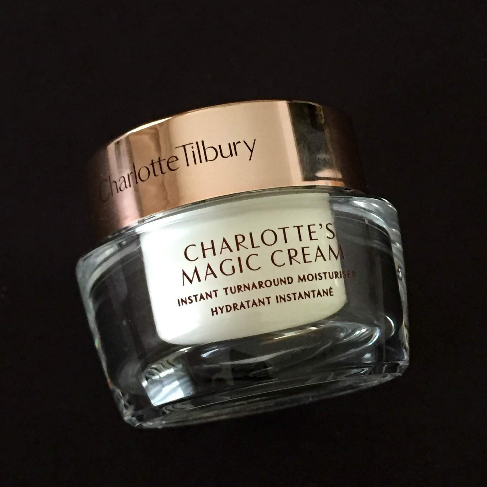

HeightAscend Cream

T"HeightAscend Cream is a marvel of enchantment, a potion that beckons
the very heavens to grant stature. As a magician who wields spells, I'm
enchanted by its mystical blend, for it casts a spell of growth with every
application." - Enchantra the Illusionist
- 2 Essence of Sunflower Petals
- 1 Ground Stardust Pearl
- 3 drops of Luna Lily Extract
- 1 tablespoon of Enchanted Honey
- 1 teaspoon of Crystal Spring Water
- A sprinkle of Phoenix Feather Powder
- Under the morning sun, gather 2 Essence of Sunflower Petals, capturing their
growth energy. Let them bask in sunlight for an hour.
- Grind 1 Stardust Pearl to a fine powder, absorbing the starry essence.
Be cautious, for star energy is potent.
- Extract 3 drops of Luna Lily Extract from the rare night-blooming flowers. These drops harness the magic of lunar cycles.
- Combine the ingredients in a moonlit silver bowl. Add Enchanted Honey for nourishment, Crystal Spring Water for purity, and a
prinkle of Phoenix Feather Powder for vitality.
- Stir gently, clockwise, under the light of a crescent moon. Whisper your growth aspirations into the mixture.
- Using a phoenix feather quill, apply the cream to your skin, focusing on areas you wish to enhance. The phoenix's
regenerative properties will amplify the potion's effects.
- Before bed, perform a moonlit dance, channeling your desire for growth. Visualize your height
increasing with each step.
- Repeat the cream application and moonlit dance for a lunar cycle to maximize results.